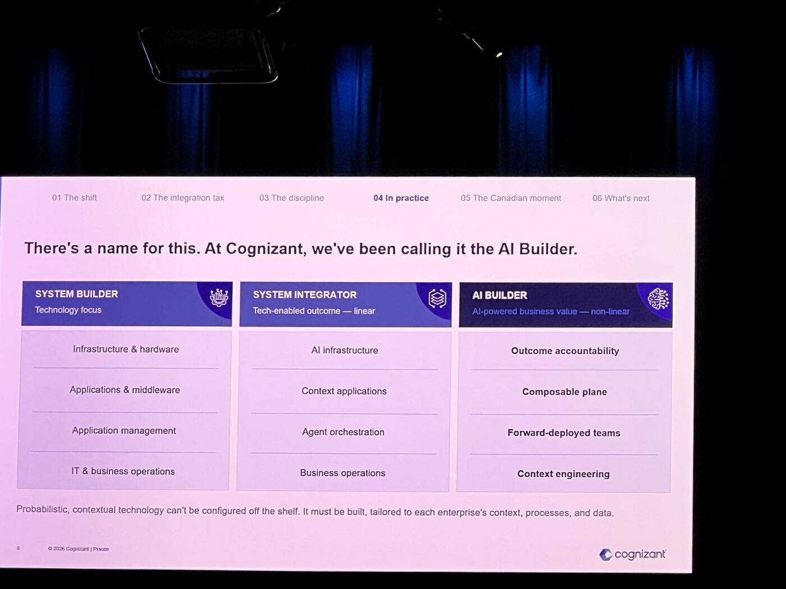
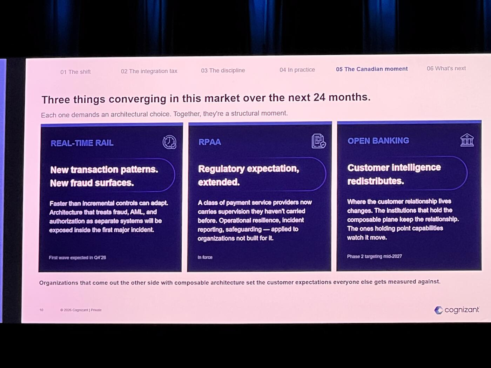

Naveen Sharma's keynote focused less on AI hype and more on the operational realities of building AI-enabled financial infrastructure inside large enterprises. Rather than presenting AI as a standalone innovation wave, he framed it as a systems transformation problem involving architecture, regulation, organizational design, and integration strategy.
The core argument of the session was that the payments industry is entering a phase where AI capabilities can no longer be treated as isolated experiments or point solutions. Real-time payments, open banking, AI-driven operations, regulatory modernization, and customer expectations are all converging simultaneously. According to Sharma, organizations that approach these as separate transformation programs will recreate the same siloed architectures and integration failures that have historically slowed innovation in financial services.
Why Transformation Programs Fail
He described how enterprises repeatedly struggle with long-term transformation initiatives because organizational realities overpower technical ambition. Three recurring patterns were highlighted as major causes of failure.
1. Budget pressure. Short-term business wins almost always defeat long-term platform investments during quarterly planning cycles. A 90-day tactical solution consistently receives more executive support than an 18-month infrastructure program, even when the long-term platform would create substantially more value.
2. Regulatory disruption. AI governance, anti-money laundering updates, payment modernization mandates, resilience requirements, and emerging AI oversight frameworks continuously redirect engineering and architecture resources away from strategic initiatives toward immediate compliance obligations. Sharma noted that only a few years ago, regulators were barely discussing AI, while today virtually every regulatory body is actively evaluating AI governance and operational accountability.
3. Leadership turnover. Large transformation programs often outlive the executives who originally sponsored them. When leadership changes occur, successors inherit the commitments but not necessarily the conviction behind the original vision, causing momentum to deteriorate over time.
The Composability Imperative

Rather than proposing another large-scale transformation methodology, Sharma argued for a fundamentally different architectural philosophy centered on composability.
He repeatedly emphasized that enterprises should stop building isolated systems and later attempting to connect them through expensive integration projects. Instead, organizations should define business entities, customer models, workflows, and interactions consistently from the beginning so that capabilities can naturally compose together over time.
An insurance example illustrated this point clearly. Sharma explained that if different parts of an organization cannot consistently define what constitutes a customer, an interaction, or a claim, then the organization is effectively designing for fragmentation from day one. The resulting systems inevitably become disconnected silos that require even more effort to integrate later.
Forward-Deployed Engineers
This idea of composability extended beyond technology architecture into organizational operating models. Sharma argued that traditional IT delivery structures are no longer sufficient for AI-driven enterprises. The older approach of gathering requirements, disappearing for months to build systems, and returning later with a deployed solution does not work effectively in rapidly changing AI environments.
Instead, he advocated for "forward-deployed engineers" embedded directly within operational environments from the beginning of projects. These engineers would work alongside business teams continuously, learning workflows, observing human decision-making, and iterating systems in real time.
Context Engineering

One of the most significant concepts introduced during the keynote was "context engineering." Sharma described context as the uniquely human layer that includes judgment, organizational memory, behavioral nuance, lessons learned, and informal interactions that rarely appear in formal requirements documents.
He argued that AI systems without context are reduced to deterministic automation, while systems enriched with operational context can begin to support probabilistic reasoning and more adaptive decision-making.
This framing positioned context as one of the most valuable assets enterprises possess. Sharma suggested that organizations that fail to capture operational context are dramatically underselling the potential of AI technologies by constraining them to rigid rule execution rather than enabling higher-order decision support.
Operational Proof Points
The keynote also connected these architectural principles to measurable operational outcomes already being observed in financial services deployments. Sharma referenced examples where AI-enabled systems:
- Significantly increased first-time approval rates
- Reduced call center abandonment rates close to zero
- Shortened processes that previously required several days into workflows completed in under two minutes
The Three-Track Trap
Importantly, he warned the audience against treating current industry initiatives such as Real-Time Rail modernization, open banking, and AI transformation as independent programs. Each initiative on its own already represents a massive implementation effort. Building them separately, he argued, would simply produce three new enterprise silos that organizations would later spend years trying to connect.
A New Evaluation Framework
The keynote concluded with a practical framework for evaluating new technologies. Sharma suggested that enterprises should stop asking only whether a capability is useful or impressive. The more important strategic question is whether the capability composes effectively with the systems, workflows, and infrastructure already in place.
If a technology strengthens composability and builds upon existing capabilities, it likely deserves serious consideration. If it introduces another disconnected environment or isolated workflow, organizations may simply be creating future integration debt.
Overall, the keynote presented AI transformation not as a race to adopt the newest models, but as a long-term discipline of building interoperable, context-aware, composable systems capable of evolving alongside changing business, regulatory, and technological conditions.
Key Takeaways
- Three reasons transformation programs fail: budget pressure (90-day wins beat 18-month platforms), regulatory disruption pulling away engineers, and leadership turnover.
- Composability beats integration. Define entities, workflows, and customer models consistently from day one.
- "Forward-deployed engineers" sitting inside business teams beats requirements-then-disappear delivery.
- "Context engineering" is the new moat — without it, AI is just deterministic automation.
- Don't run RTR, open banking, and AI transformation as three separate programs — that builds three new silos to integrate later.
- Right evaluation question: does this technology compose with what we already have?